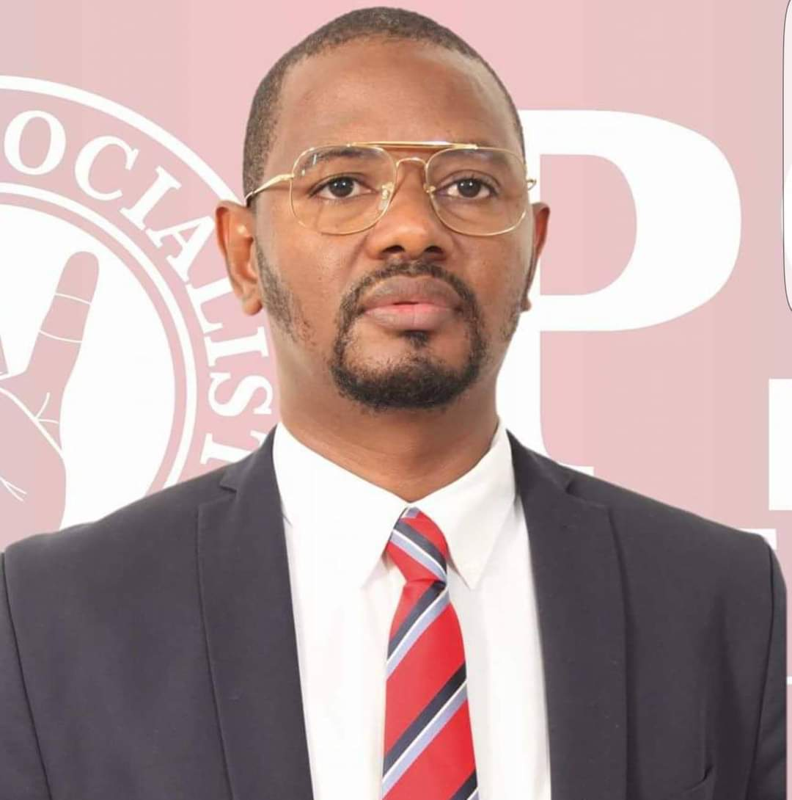

Janvier 2014
Président du Parti socialiste (PS) de Guinée-Bissau
Élu président du parti lors du 1er Congrès de cette formation politique à l'âge de 32 ans, il devient alors le plus jeune dirigeant de parti politique du pays.
République de Guinée-Bissau
Homme politique, environnementaliste et défenseur des droits civiques. Ancien ministre du Tourisme et de l'Artisanat, député à l'Assemblée nationale populaire de la République de Guinée-Bissau.

Biographie
Secuna Baldé est un homme politique, environnementaliste et défenseur des droits civiques de la République de Guinée-Bissau. Son parcours conjugue responsabilités gouvernementales, mandat parlementaire, carrière diplomatique et engagement constant en faveur du développement durable.
Ancien ministre du Tourisme et de l'Artisanat et député à l'Assemblée nationale populaire, il a également exercé les fonctions de conseiller au cabinet du Président de la République, de conseiller du Premier ministre chargé du Commerce et de l'Investissement, ainsi que de conseiller du ministre de la Défense nationale et des Combattants de la Liberté de la Patrie.
Il a par ailleurs été membre non permanent de la Commission nationale des élections (CNE) et exerce aujourd'hui comme consultant en investissement et en développement de projets dans les secteurs du tourisme et de l'hôtellerie.
Parcours politique
Janvier 2014
Élu président du parti lors du 1er Congrès de cette formation politique à l'âge de 32 ans, il devient alors le plus jeune dirigeant de parti politique du pays.
Élections générales de 2014
Lors des élections générales de 2014, il se présente comme tête de liste et candidat au poste de Premier ministre sous les couleurs du Parti socialiste (PS) de Guinée-Bissau.
MADEM-G15
Ancien militant et membre fondateur du MADEM-G15, il y a notamment exercé les fonctions de :
PTG
Au sein du PTG, il a été :
Parcours diplomatique
Dans le cadre de sa carrière diplomatique, il a exercé les fonctions de ministre-conseiller au sein des ambassades de la Guinée-Bissau auprès de :
Ministre-conseiller à l'ambassade de la Guinée-Bissau à Brasília.
Ministre-conseiller à l'ambassade de la Guinée-Bissau à Praia.
Ministre-conseiller à l'ambassade de la Guinée-Bissau à Conakry.
Engagement environnemental
Environnementaliste convaincu, Secuna Baldé porte une vision d'une Guinée-Bissau plus verte, plus forte, pour les générations futures — de la protection de l'archipel des Bijagós au développement d'un tourisme durable au bénéfice des communautés locales.

Protéger nos forêts
Préserver nos côtes
Sauvegarder la biodiversité
Soutenir les communautés
Économie circulaire
Investir dans la jeunesse
Formation académique
MBA
Gestion des entreprises et des ressources humaines.
Spécialisation
Spécialisation en sciences politiques.
Licence
Licence en tourisme.
Formation technique
Formation technique en gestion informatique.
Secuna Baldé accompagne aujourd'hui investisseurs et porteurs de projets dans les secteurs du tourisme et de l'hôtellerie, en mettant à leur service son expérience gouvernementale, parlementaire et diplomatique.
Contact
Pour toute demande institutionnelle, professionnelle ou presse, veuillez utiliser l'adresse correspondant à votre requête.
Demandes d'information et sollicitations générales.
contact@secunabalde.comCorrespondance personnelle et professionnelle directe.
secuna@secunabalde.comActivités institutionnelles et professionnelles.
cabinet@secunabalde.comSite officiel : www.secunabalde.com